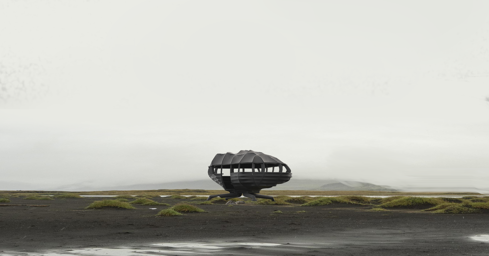
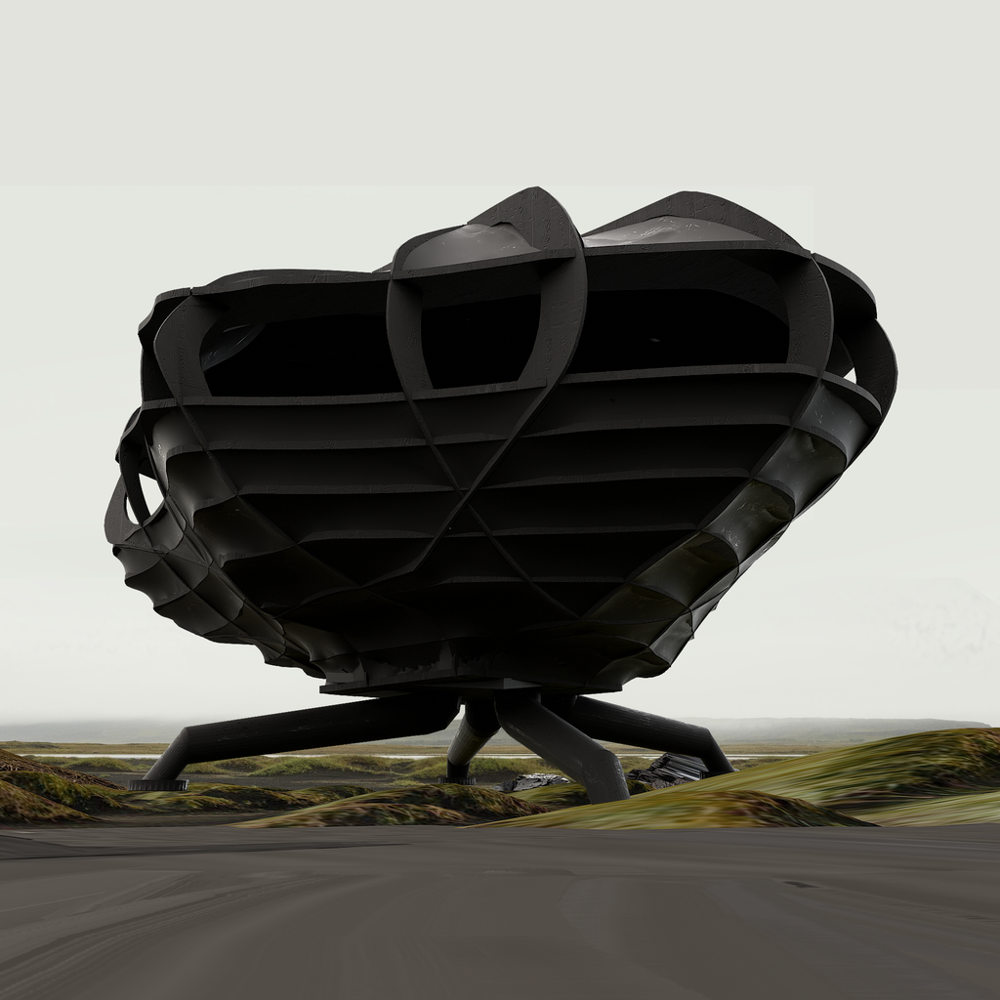
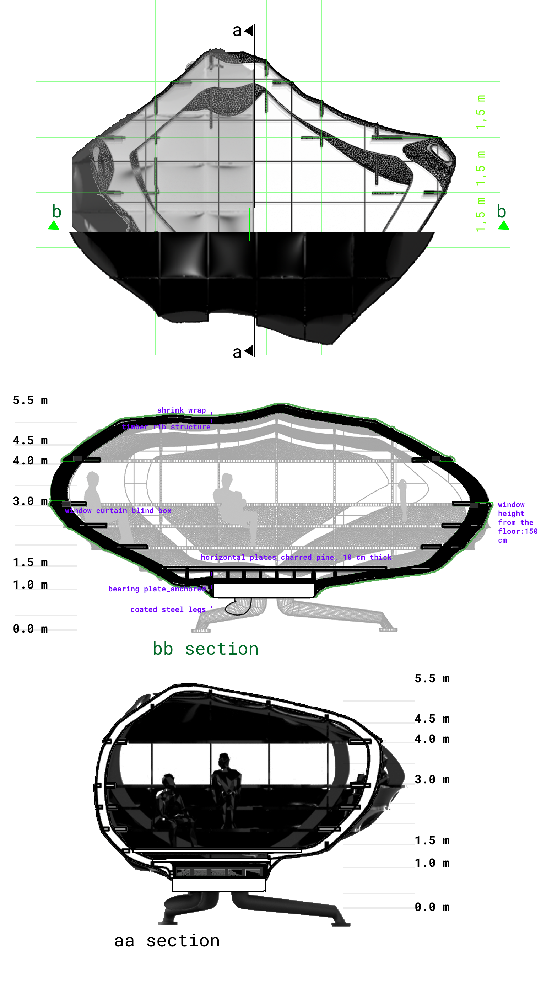
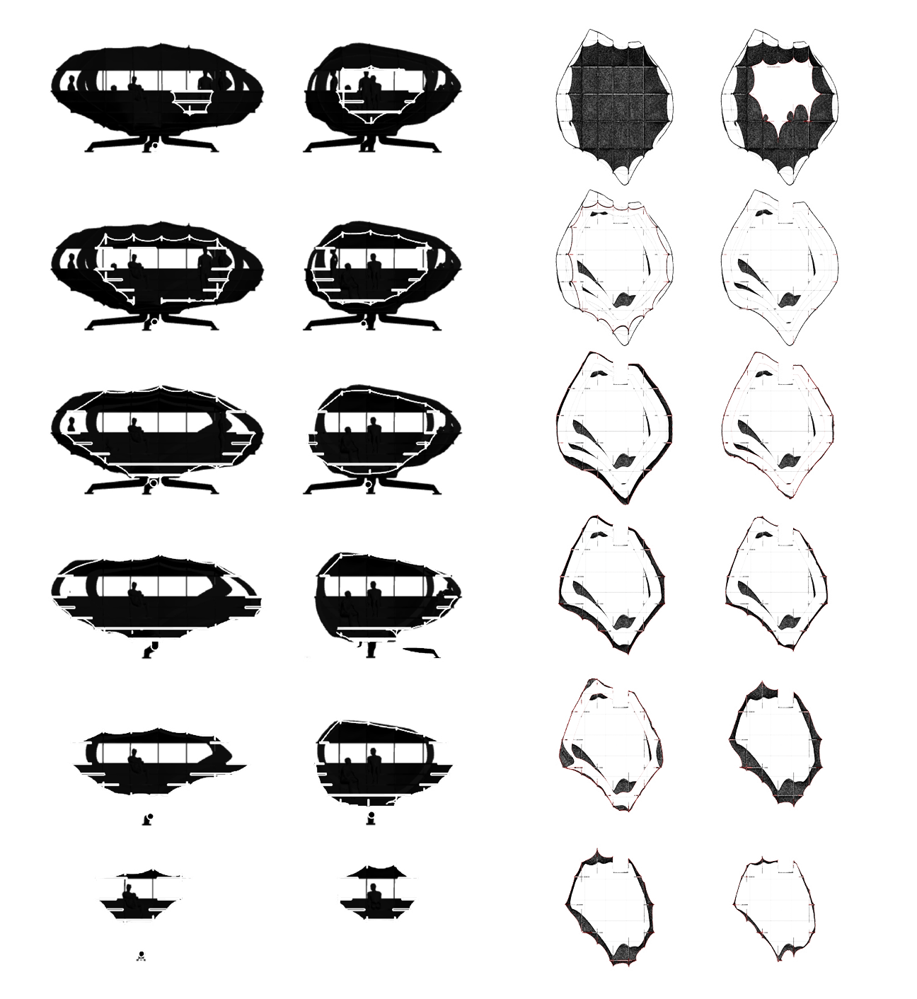
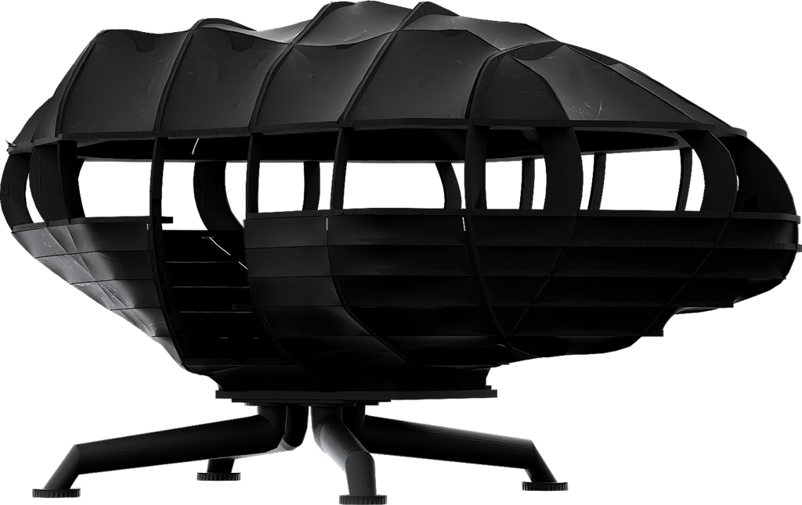

Djúpivogur, Iceland. Anchored, weight-bearing, grounded in basalt.
Avian Data Research indicates a shift in behavior: birds are increasingly spotted in the village center, not just the wild.
Djúpivogur: 103 Species observed year-round.
Flugbraut (Airfield): 68 Species.
Lakes: 62 Species respectively. The structures are positioned to capture this full range—from the remote wetlands to the urban edge.

visualisation of the earth-bird-watching-hut, capable of hosting 10 people

The project addresses the realities of the context directly. By integrating recycled fishery waste and using a low-impact structural logic, the design minimizes its physical footprint while highlighting the tension between the fishing industry and the bird populations that rely on the same waters.

Design Strategy: The System Reproducibility vs. Uniqueness
We use an Automated Timber Grid. The system is automated, allowing us to produce different forms on the same budget.
The volume of timber remains constant for every cabinet, but the shape evolves to suit the specific location.
.png)
Fabrication: CNC cutting allows for off-site preparation of the main structure.
Logistics: Pieces are sized to fit standard trucks, streamlining transport.
Assembly: Basic on-site installation. No heavy machinery enters the site.
Foundation: No Excavation We strictly avoid deep foundations.

4 Stable Legs: Each cabinet stands on four marine-grade coated steel legs.
Load Distribution: This minimizes pressure on the fragile soil.
Thermal Gap: Detaching the structure from the ground eliminates the need for heavy floor insulation and protects the permafrost below.
